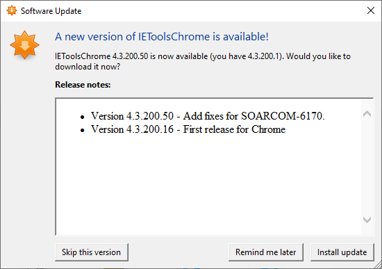

How To Upgrade The IETools Chrome Extension
There is an autoupdate checker built into IEToolsChrome, which you can enable or disable during the install. If you are using it, a secondary window will appear on your desktop while running Chrome, to notify you of an update, which you can then proceed to download & install without stopping Chrome. If you're not using it, you can manually download the update, below. Also, you'll have to restart Chrome.

Download our setup program, IEToolsChromeBootstrapper.exe